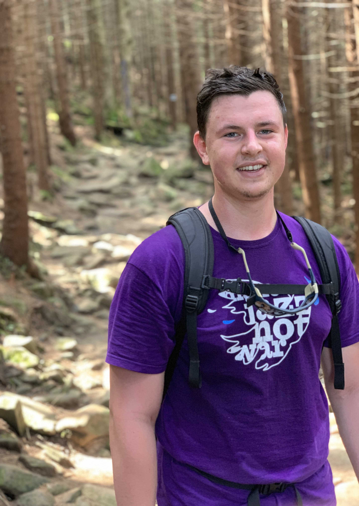
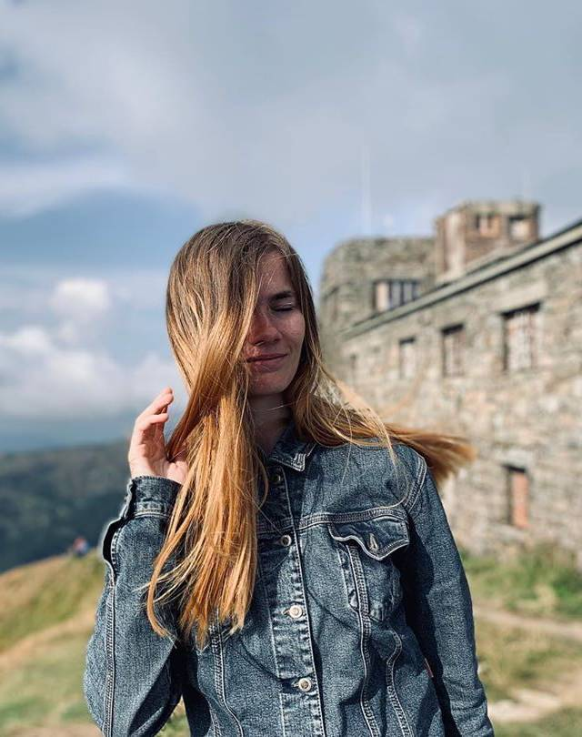
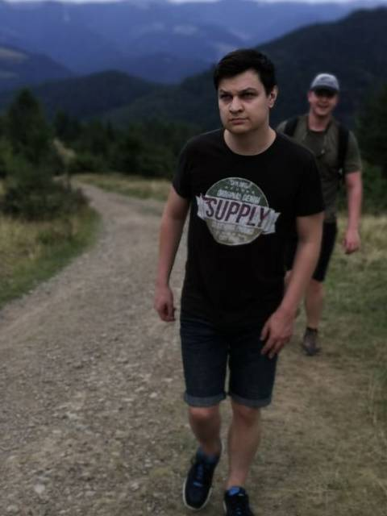
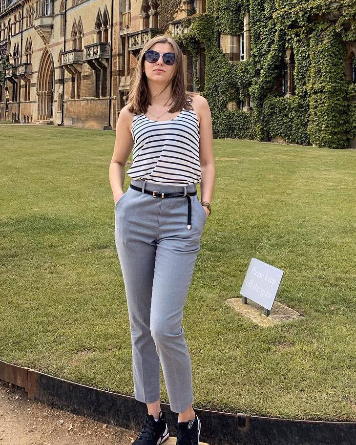
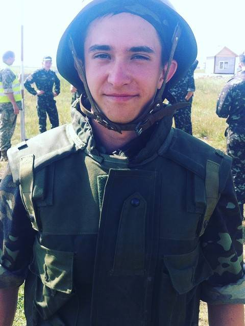

Here are few of my closest friends.

George
Experienced adventurist. Been around the world, seen things. Knows about tourism more than all of us combined. Has been struck by lightning.

Vasilinka
Her photographer skills are fire. Has twice as much stamina as I do, always the first one to climb the mountain.

Igor
The man, the myth, the legend. From time to time comes up with crazy ideas. After our last trip - doesn't like mountains any more. Not represented in social media.

Anastasiia
Jump-scared of spiders, able to find one even in a fully dark room. The most tolerant of other races person in the world.

Ruslan
Gamer, streamer (kinda), dota2 booster. Top 35 slardar in the world.